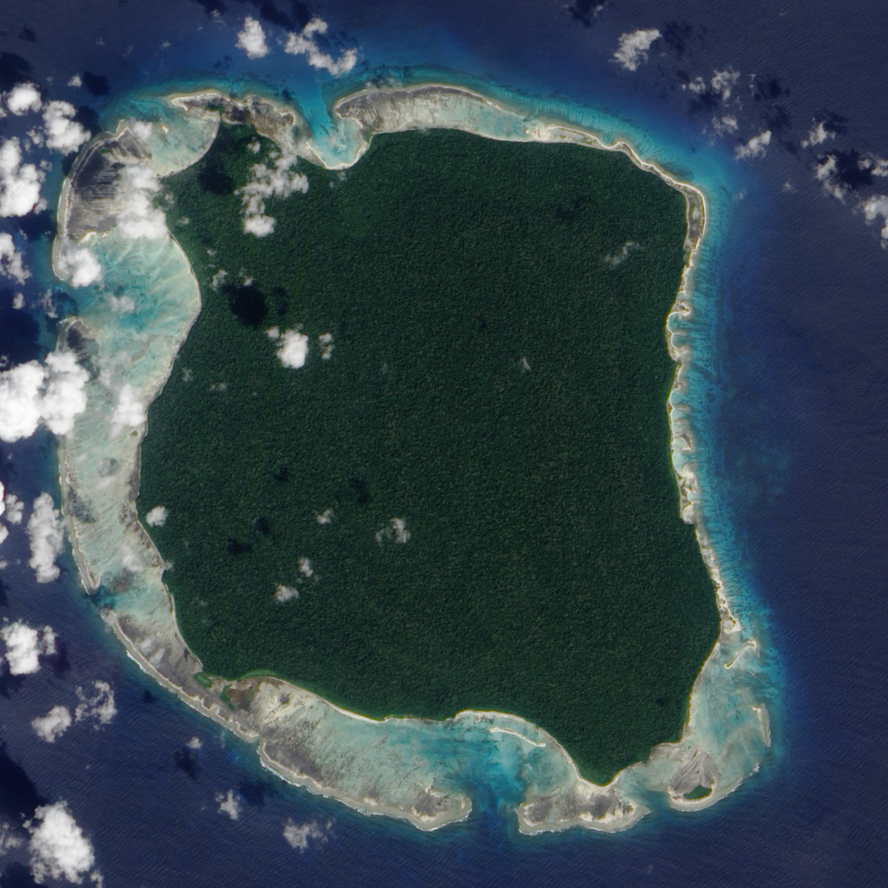
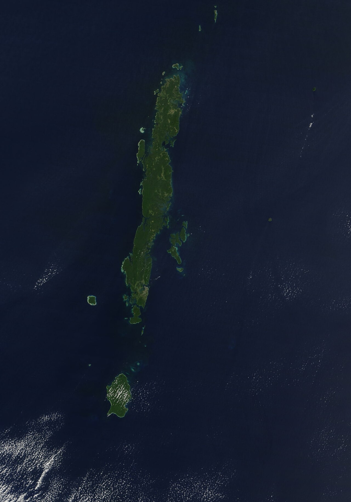

Deep dives / Asia
North Sentinel Island & the Sentinelese: Reef Uplift, Isolation & Indian Ocean History
Rising west of South Andaman across the Bay of Bengal, North Sentinel Island (~60 km2) is home to the Sentinelese—perhaps the world's most consistently autonomous hunter-gatherer-fisher community in active resistance to external intrusion. Every detail of their history highlights both the limits of indirect evidence (no archaeologist or geneticist has ever worked on the island) and the dramatic 2004 tectonic uplift that reshaped its fringing coral reefs.
Synthesizes Indian anthropological expedition records (1867–2024), comparative Andamanese genetics (Onge/Jarawa/Great Andamanese), 1956 PATR Indian protective law, and post-2004 coseismic geology; no intrusive direct sampling of Sentinelese individuals exists.
Landscape and objects


NASA Earth Observatory image highlighting North Sentinel Island's forest interior and uplifted western/southern coral reef platforms.NASA Earth Observatory image created by Jesse Allen, using data provided by the NASA EO-1 team. · Image source · Public domain · Full-size image



NASA MODIS regional satellite view situating North Sentinel Island west of South Andaman and north of Little Andaman in the Bay of Bengal.NASA, MODIS / LANCE · Image source · Public domain · Full-size image

The whole area in view
Andaman archipelago context showing North Sentinel Island, its uplifted coral reefs, neighboring Jarawa and Onge reserves, and Port Blair.
North Sentinel Island (Main Interior & East Shore)
Prehistoric–Present
Dense tropical lowland forest ringed by narrow beaches where Sentinelese communities hunt wild pigs, gather forest roots and honey, and pole shallow outrigger canoes inside the reef lagoon. [1]
11.55°, 92.24°North Sentinel North Reef & MV Primrose (1981)
1981 CE & Dec 2004 Uplift
Shallow northern reef where the Panamanian freighter MV Primrose grounded in August 1981, supplying cold-forged iron for arrowheads/adzes before the 2004 earthquake raised nearby reef flats above low tide. [1] [7]
11.59°, 92.22°Southern Coast, Nineveh Wreck (1867) & Former Constance Islet
1867 CE & Dec 2004 Uplift
Southern reef zone where survivors of HMS/merchantman Nineveh encountered iron-tipped arrows in 1867, and where ~1–2 m of 2004 coseismic uplift merged shallow lagoons and former Constance Islet terrain. [1] [8]
11.51°, 92.26°Port Blair (South Andaman Colonial & PATR HQ)
1858–Present
British penal settlement where 6 Sentinelese abducted by Maurice Vidal Portman in January 1880 rapidly sickened with introduced pathogens (two elders died), leaving four traumatized children returned with gifts. [1]
11.67°, 92.73°South & Middle Andaman (Jarawa Territory)
Prehistoric–Present
Closest linguistic and cultural neighbors historically; yet even Sentinelese and Jarawa/Onge speakers could not communicate intelligibly during 1967–1991 visits. [1] [2]
12.15°, 92.65°Little Andaman Island (Onge Population)
Deep Pleistocene–Present
Onge genome and kitchen-midden studies provide the closest scientific proxy for Sentinelese deep ancestry (~25–50 ka Asian divergence), as zero DNA has ever been sampled directly on North Sentinel. [2] [3]
10.75°, 92.50°
1. Origins & Ancestry: What Andamanese Genetics Indicate (and Why No Sentinelese DNA Exists)
No blood, saliva, skeletal DNA, or radiocarbon-dated archaeological stratigraphy has ever been obtained from North Sentinel Island itself; attributing Sentinelese deep history therefore relies on broader Andaman archipelago evidence. Genomic studies of neighboring Onge, Jarawa, and Great Andamanese populations show distinctive deep East/South Eurasian branches—including unique mitochondrial lineages M31 and M32—consistent with long Pleistocene-to-Holocene archipelago isolation after lowered glacial sea levels ended dry-land bridges or shortened water gaps between Myanmar, Sumatra, and the Andamans. [3] [4] [2]
Whole-genome comparisons of Andamanese (Jarawa and Onge) populations demonstrate that their ancestors branched early alongside other eastern Asian and Australo-Melanesian lineages (~25–50+ ka divergence, with controversial hypotheses of tiny shared archaic-hominin introgression debated by Mondal et al. 2016 and subsequent studies), without recent bronze, iron, or pastoralist continental gene flow. Crucially, however, even closely adjacent Jarawa, Onge, and Great Andamanese groups show strong internal differentiation—making exact Sentinelese branching time impossible to measure directly under non-contact law. [2] [5]
2. Unclassified Language, Reef Subsistence & Shipwreck Ironworking
Linguistically, Sentinelese remains unclassified because no word list or grammatical recording has ever been assembled. When Anthropological Survey of India (AnSI) teams led by T. N. Pandit accompanied Jarawa and Onge interpreters to North Sentinel during the 1967–1991 offshore expeditions, the interpreters could not understand the Sentinelese speech shouted from shore—indicating centuries or millennia of independent separation across ~35 km of open Andaman Sea. [1]
Eyewitness reports from 1867 through 2018 document a self-sufficient coastal-and-forest economy: bow hunting for endemic Andaman wild pigs (Sus scrofa vittatus), reef and turtle hunting with bows/harpoons from narrow single-outrigger canoes poled exclusively inside calm lagoon shallows (not deep ocean vessels), gathering wild tubers, pandanus fruits, shellfish, and forest honey, and cold-hammering iron scavenged from wrecks like the 1867 Nineveh and the 1981 Panamanian freighter MV Primrose into barbed arrowheads and woodworking adzes. [1]
3. Colonial Trauma, Official Contact Expeditions & India's Legal Exclusion Zone
Historically documented encounters help explain the Sentinelese community's consistent refusal of uninvited outsiders. After East India Company surveyor John Ritchie noted night fires offshore in 1771 and sailors from the wrecked merchantman Nineveh fought off iron-tipped arrows in 1867, British administrator Maurice Vidal Portman landed an armed party in January 1880 and abducted six Sentinelese—an elderly couple and four children—to Port Blair. The two adults quickly sickened and died from unexposed colonial-port infections; the four traumatized children were hurriedly put back ashore with gifts, leaving an indelible oral warning. [1]
Independent India designated the Andamans under the 1956 Andaman and Nicobar Islands (Protection of Aboriginal Tribes) Regulation (PATR). Between 1967 and 1991, AnSI anthropologist T. N. Pandit and colleague Madhumala Chattopadhyay conducted carefully regulated gift-dropping beach visits culminating on January 4, 1991, when Sentinelese walked into waist-deep surf to receive floating coconuts by hand without arrows. Recognizing severe epidemiological risk, India ended active gift landings in 1996–1997, establishing a permanent 'eyes-on, hands-off' exclusion cordon (3–5 nautical miles) enforced against poachers (two illegal crab fishers killed in 2006) and unauthorized intruders (US missionary John Allen Chau killed in November 2018). [1]
| Year | Recorded Contact or Legal Event | Documented Outcome | Sources |
|---|---|---|---|
| 1771 & 1867 CE | John Ritchie offshore sighting; Nineveh wreck south reef clash | First recorded colonial logs and evidence of iron-tipped Sentinelese arrows | [1] |
| Jan 1880 CE | Portman armed kidnapping of 6 Sentinelese to Port Blair | Elderly couple died of disease; 4 children returned — likely seeding generations of defensive deterrence | [1] |
| 1956 CE | Andaman & Nicobar PATR Regulation enacted | Legal ban on unauthorized entry, settlement, or photography around North Sentinel | [1] |
| Aug 1981 CE | MV Primrose runs aground on North Reef | Crew rescued by helicopter; salvaged hull iron became key Sentinelese tool metal source | [1] |
| 1967–1991 (Jan 4) | AnSI Pandit & Chattopadhyay coconut contact visits | Brief unarmed beach exchanges before formal cessation of state contact trips in 1996–1997 | [1] |
| 2006 & Nov 2018 | Unauthorized intrusions (crab poachers; John Allen Chau) | Intruders killed by arrows on beach; Indian authorities upheld 'hands-off' legal cordon | [1] |
4. 26 December 2004 M9.1–9.3 Sumatra–Andaman Earthquake: Reef Uplift & Landscape Change
On December 26, 2004, a 1,300 km megathrust rupture (Mw 9.15–9.3) along the Sunda Trench lifted the western Andaman forearc crest catastrophically in minutes while the eastern side near Port Blair subsided. Satellite optical comparisons, GPS geodetic models, and coral microatoll surveys across the western Andaman margin measured roughly 1–2 meters of permanent coseismic uplift at North Sentinel Island—transforming submerged western and southern fringing coral reefs into barren, sun-bleached white limestone flats exposed continuously at low tide and permanently enlarging North Sentinel's dry-land footprint. [6] [7] [8] [10]
Shallow lagoons inside the southern reef (including channels separating small southern Constance Islet) drained or merged with emerged coral platforms, altering shellfish harvesting grounds and restricting deep-water boat access even for the Sentinelese's shallow poled canoes. Within three days of the megatsunami, Indian Coast Guard helicopter reconnaissance photographed a Sentinelese bowman firing arrows up from an emergent beach—demonstrating both survival (likely aided by rapid tectonic uplift lifting villages above local tsunami runup heights and traditional coastal flight intuition) and continued assertion of sovereignty. [8] [9] [1]
5. Demography, Health Vulnerability & Ethics of Non-Interference
Published population counts for North Sentinel—ranging from ~39 individuals counted along beaches in India's 2001 census reconnaissance to working anthropological estimates of 50–150 people—remain visual estimates under dense jungle canopy rather than censuses. Experience with the Great Andamanese (who collapsed from several thousand in 1858 to under 60 today after British colonial measles, syphilis, and influenza epidemics) underscores why India's statutory maritime exclusion zone and strict medical quarantine remain vital to Sentinelese survival. [1]
Explore in the interactive atlas
Open this era on global Explore ↗ Open Asia atlas ↗ Climate, sea level & ice-sheet context ↗
Continue exploring
- India Across Three Millennia: Mahajanapadas, Maurya & Gupta Empires, Southern Kingdoms, Sultanates, Mughals, Ahom & Sikh Polities — Comprehensive chronological and regional guide answering who, where and when across South Asia—from Painted Grey Ware and Magadha through Ashoka, Satavahanas, Guptas, Nalanda, Pallavas, Chalukyas, Cholas, Delhi & Bengal Sultanates, Vijayanagara, Mughals, Ahom Assam and the Sikh Empire.
- Shipwrecks of Antiquity: Sunken Hulls & Maritime Worlds — How ancient and medieval shipwrecks across the Mediterranean, Nile, Red Sea, North Atlantic, Indian Ocean, and East China Sea preserve exact sinking dates, hull engineering, and lost cargoes.
- Borobudur, Prambanan & Bagan — Compare Southeast Asia’s monumental irrigated kingdoms: Sailendra Borobudur and Mataram Prambanan on Central Java alongside Bagan’s thousands of Irrawaddy brick stupas and Óc Eo–Ayutthaya.
- The branching human family — From late Miocene candidates to Homo sapiens, Neanderthals and Denisovans, with the places where the earliest evidence was found.
Sources for this guide
- Paul, S. & Justin, A. (2024). Sentinelese contacts: anthropologically revisiting the most reclusive masters of the terra incognita North Sentinel Island. Humanities and Social Sciences Communications.
- Mondal, M. et al. (2016). Genomic analysis of Andamanese provides insights into ancient human migration into Asia and adaptation. Nature Genetics.
- Endicott, P. et al. (2003). The Genetic Origins of the Andaman Islanders. American Journal of Human Genetics.
- Thangaraj, K. & Chaubey, G. et al. (2006). Deep maternal lineage in Andaman Islanders (M31, M32). Journal of Human Genetics.
- Barik, S. S., Sahani, R. et al. (2008). Detailed mtDNA genotypes permit a reassessment of the settlement and population structure of the Andaman Islands. AJPA.
- Subarya, C., Chlieh, M. et al. (2006). Plate-boundary deformation associated with the great Sumatra–Andaman earthquake. Nature.
- Meltzner, A. J., Sieh, K. et al. (2006). Uplift and subsidence associated with the great Aceh–Andaman earthquake of 2004. Journal of Geophysical Research.
- Malik, J. N. & Murty, C. V. R. (2006). Landscape Changes in the Andaman and Nicobar Islands (India) after the December 2004 Great Sumatra Earthquake and Indian Ocean Tsunami. Earthquake Spectra.
- Malik, J. N. & Johnson, F. C. (2019). Tsunami records of the last 8000 years in the Andaman Island, India. Scientific Reports.
- Ito, S., Yamazaki, A. et al. (2020). Coral geochemical signals of 2004 coseismic uplift in the Andaman Islands. Geochimica et Cosmochimica Acta.
Sources checked and linked above; geological and historical dating methods follow the primary papers.